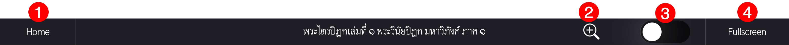
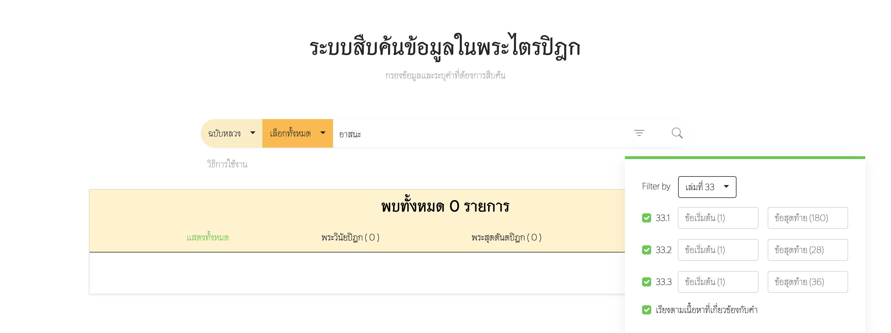

TriBuddha คือ เว็บแอพพลิเคชั่นที่รวมรวมพระไตรปิฎกทั้ง 45 เล่ม ซึ่งแบ่งออกเป็น 3 หมวดหมู่ คือ พระวินัยปิฎก, พระสุตตันตปิฎก และพระอภิธรรมปิฎก โดย TriBuddha แบ่งออกเป็น 3 Features หนังสืออิเล็กทรอนิกส์ (E-book), เทียบเคียงพระไตรปิฎก (Compare Tripitaka) และค้นหาคำในพระไตรปิฎก (Search)
- หนังสือพระไตรปิฎกอิเล็กทรอนิกส์ (E-book) รวบรวมหนังสือพระไตรปิฎกเพื่อให้ผู้ใช้งานอ่าน
- เทียบเคียงพระไตรปิฎก (Compare Tripitaka) ผู้ใช้งานสามารถเทียบเคียงระหว่างฉบับเพื่อเพิ่มเข้าใจเนื้อหาในพระไตรปิฎกอย่างถ่องแท้มากยิ่งขึ้น
- ค้นหาคำในพระไตรปิฎก (Search) ผู้ใช้งานสามารถค้นหาเลือกดูเนื้อหาที่ต้องการด้วยคำในพระไตรปิฎกและกรองเนื้อหาตามที่ต้องการ เพื่อให้ผู้ใช้งานสามารถเข้าถึงเนื้อหาได้อย่างรวดเร็ว แม่นยำ
วิธีการใช้งานหนังสือพระไตรปิฎกอิเล็กทรอนิกส์ (E-book) มีขั้นตอนดังนี้:
- ผู้ใช้งานสามารถเลือกเมนู HOME ที่แทบด้านบน โดยหน้าเริ่มต้นเมื่อเข้า TriBuddha web application จะเป็นหน้า HOME เมื่อผู้ใช้งานเข้าสู่หน้า HOME
- หน้า HOME เป็นหน้าที่รวบรวมรายการพระไตรปิฎก 45 เล่ม โดยจะแบ่งหมวดเป็น พระวินัยปิฎก พระสุตตันตปิฎก พระอภิธรรมปิฎก ซึ่งสามารถ click แสดงเพิ่มเติม/แสดงน้อยลง เพื่อปรับจำนวนการแสดงเล่มของหมวดนั้นๆ และเลือกเล่มทีี่ต้องการอ่าน
- เมื่อผู้ใช้งานเข้าสู่หน้าเนื้อหาพระไตรปิฎกแล้วแต่ละหน้าจะแสดงชื่อเล่ม
เนื้อหาและปุ่มต่างๆ
 - ปุ่มที่ 1: Home - เมื่อผู้ใช้งานต้องการที่จะออกจากหน้านี้หรืออ่านหนังสือเล่มอื่น สามารถกดปุ่ม HOME เพื่อกลับไปยัง หน้า Home ที่รวบรวมรายการพระไตรปิฎก 45 เล่ม
- ปุ่มที่ 2: แว่นขยาย - ปุ่มนี้ใช้สำหรับเพิ่มขนาดตัวอักษรให้ใหญ่ขึ้น
- ปุ่มที่ 3: โหมดกลางคืน - ปุ่มนี้ใช้สำหรับเปลี่ยนสีพื้นหลังเป็นสีดำและตัวอักษรเป็นสีขาว เพื่อถนอมสายตา
- ปุ่มที่ 4: Full screen - ปุ่มนี้ใช้สำหรับนำองค์ประกอบต่างๆ โดยรอบเนื้อหาพระไตรปิฎกออก
- ปุ่มที่ 5: ปุ่มย้อนกลับและไปข้างหน้า - ปุ่มนี้ใช้สำหรับเปลี่ยนหน้าเนื้อหาพระไตรปิฎก (เลขหน้านั้นเป็นเพียงการแสดงผลของเว็บไซต์เราเท่านั้น ไม่ได้อิงตามหน้าหนังสือพระไตรปิฎก โดยแต่ละหน้าจะแสดงเนื้อหาทีละ 3 ข้อ)
วิธีการใช้งานเทียบเคียงพระไตรปิฎก (Compare Tripitaka) มีขั้นตอนดังนี้:
- ผู้ใช้งานสามารถเลือกเมนู Compare Tripitaka ที่แทบด้านบน
- ผู้ใช้งานสามารถเลือกฉบับและเล่มที่ต้องการ จากนั้นระบุเลขข้อที่ต้องการเทียบเคียง โดยระบบจะแสดงเลขข้อเริ่มต้นและเลขข้อสุดท้ายของพระไตรปิฎกแต่ละเล่มที่สามารถกรอกได้เพื่อไม่ให้กรอกเลขข้อผิดพลาด
- เมื่อกรอกเลขข้อเสร็จสิ้นกดปุ่มค้นหา ระบบจะแสดงเนื้อหาของเลขข้อที่ค้นหาปัจจุบัน (ตัวอักษรสีดำ) เลขข้อก่อนหน้า และเลขข้อถัดไป (ตัวอักษรสีเทา)
วิธีการใช้งานค้นหาคำในพระไตรปิฎก (Search) มีขั้นตอนดังนี้
- ผู้ใช้งานสามารถเลือกเมนู Search ที่แทบด้านบน
- ผู้ใช้งานเลือกฉบับ หมวด โดยหมวดสามารถเลืือกได้ทุกหมวดหรือเลือกหมวดตามที่ผู้ใช้งานต้องการ
จากนั้นกรอกคำที่เราต้องการสืบค้น
การกรอกคำที่ต้องการสืบค้น สามารถกรอกได้ 3 รูปแบบ
คำเดียว: "พระ" , "ปาราชิก" , "เลื่อมใส" , "อาสนะ" เป็นต้น
หลายคำติดกัน: "พราหมณ์กูฏทันตะ" , "บูชามหายัญ" , "เขตกรุงราชคฤห์" , "ดูกรภิกษุ" เป็นต้น
หลายคำที่ไม่ติดกันแต่อยู่ในข้อเดียวกัน: "บิณฑบาต อานนท์" , "ติเตียน นักมวย" , "อาบัติ ภิกษุ" (เว้นวรรคระหว่างคำ) - สามารถเพิ่มตัวกรองเพื่อผลลัพธ์ที่เฉพาะมากยิ่งขึ้น โดยสามารถเลือกเล่ม
(เล่มจะขึ้นอยู่กับหมวดที่ผู้ใช้งานเลือก) และระบุเลขข้อเริ่มต้นจนไปถึงเลขข้อสุดท้าย
นอกจากนี้ยังสามารถเรียงผลลัพธ์ตามเนื้อหาที่เกี่ยวข้องมากที่สุด (ค่าเริ่มต้น)
หรือเรียงตามเลขเล่มและเลขข้อ
ระบบสามารถเลือกเล่มย่อยได้และระบุเลขข้อเริ่มต้นและข้อสุดท้ายของเล่มย่อยนั้นๆ ซึ่งเล่มย่อยจะมีอยู่ในเล่มที่ 33, 36, 44, 45
 - เมื่อกรอกคำและกรองข้อมูลเสร็จสิ้นกดปุ่มค้นหา ระบบจะแสดงรายการที่พบทั้งหมดทีละ 10 รายการ และผู้ใข้งานสามารถเลือกดูผลลัพธ์ทั้งหมดหรือตามหมวดที่ต้องการ หากต้องการดูรายการถัดไปสามารถ click ปุ่มถัดไป
- เลือกรายการที่ต้องการสืบค้น เมื่อเลือกรายการเสร็จสิ้น ระบบจะแสดงเนื้อหาของเลขข้อที่เลือกพร้อมไฮไลท์คำที่สืบค้น (ตัวอักษรสีดำ คำที่สืบค้นตัวอักษรสีแดง) เลขข้อก่อนหน้า และเลขข้อถัดไป (ตัวอักษรสีเทา) และสามารถ click หน้าถัดไปเพื่อดูผลลัพธ์ถัดไป
- หากต้องการจะอ่านทั้งเล่มสามารถ click ที่ Explore now เพื่อไปยังเล่มและเลขข้อของผลลัพธ์นั้น